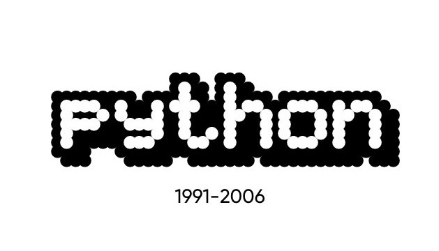

PROYECTO SOBRE PYTHON
Guido van
Guido van
Rossum
Una mirada a la persona que creó Python, a la historia del lenguaje y al camino que siguió desde sus primeros años hasta convertirse en una figura importante dentro de la programación.
01
Una historia ligada a la programación
Guido van Rossum es un programador neerlandés conocido principalmente por haber creado Python. El lenguaje comenzó como un proyecto personal y con el tiempo llegó a utilizarse en distintos campos de la informática.
En este sitio se reúnen algunos momentos de su trayectoria, el origen de Python y las ideas que estuvieron presentes durante su desarrollo.
02
Los primeros años de Python

1991
Primeras versiones públicas de Python